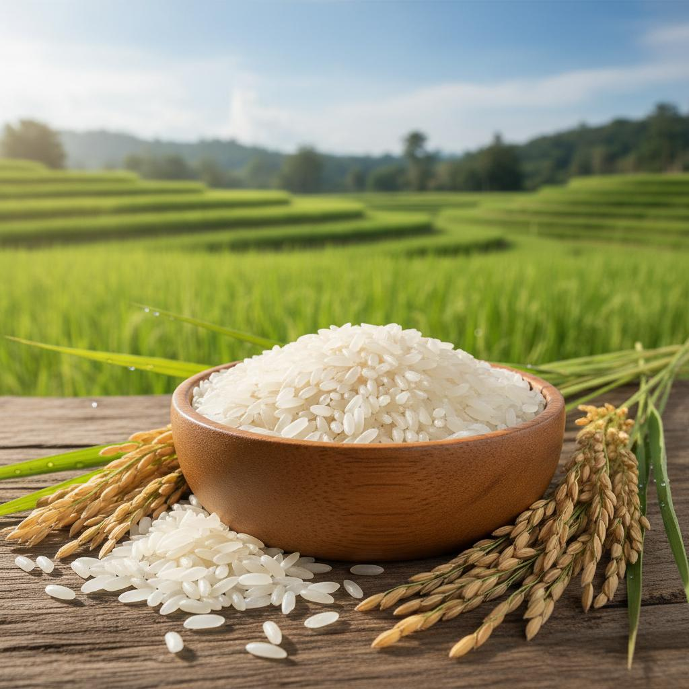
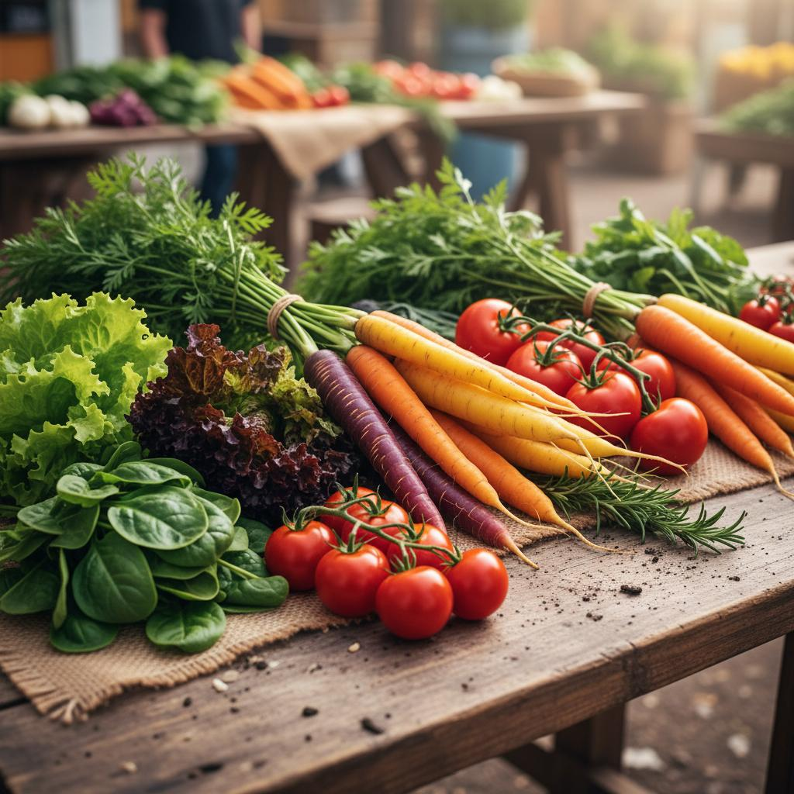
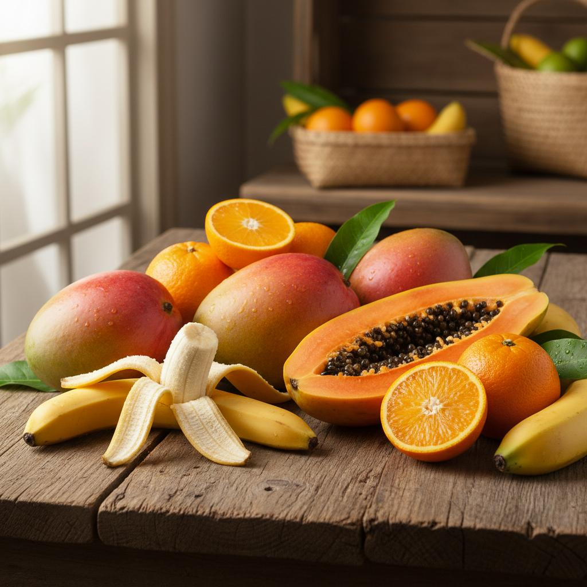
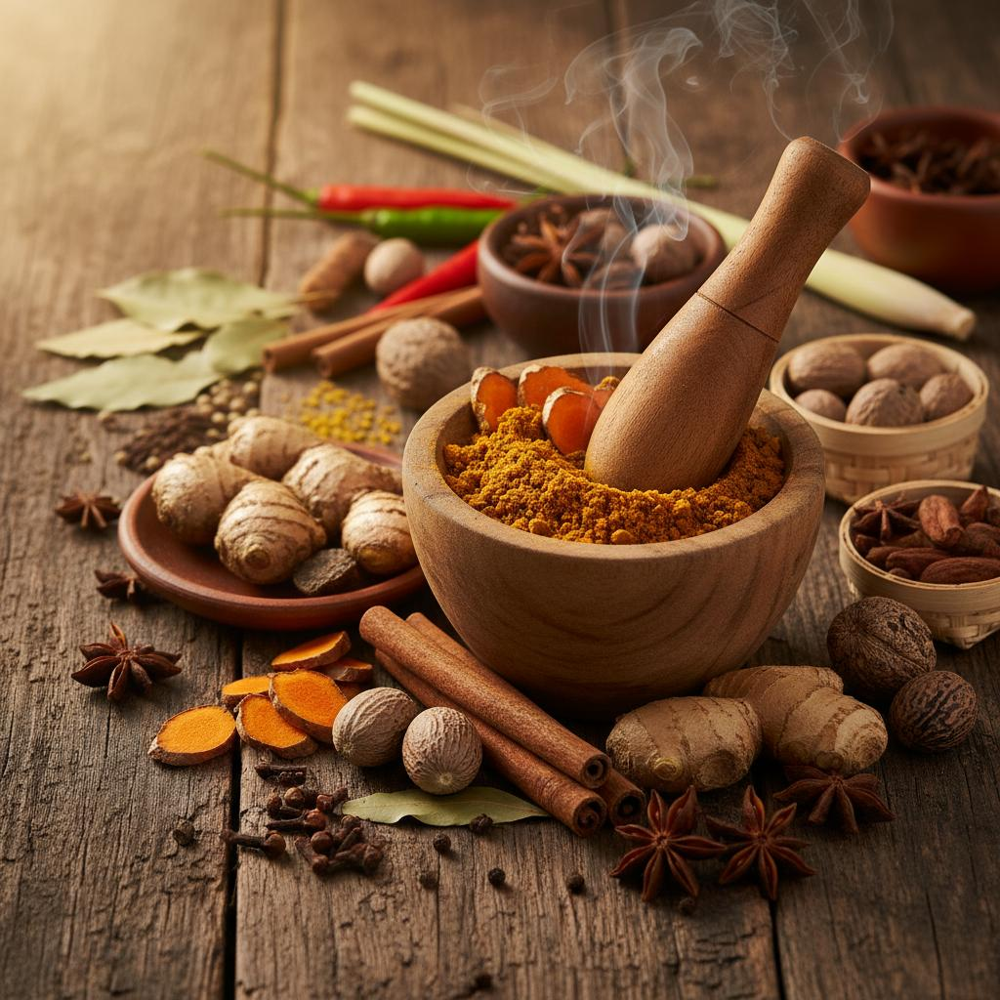
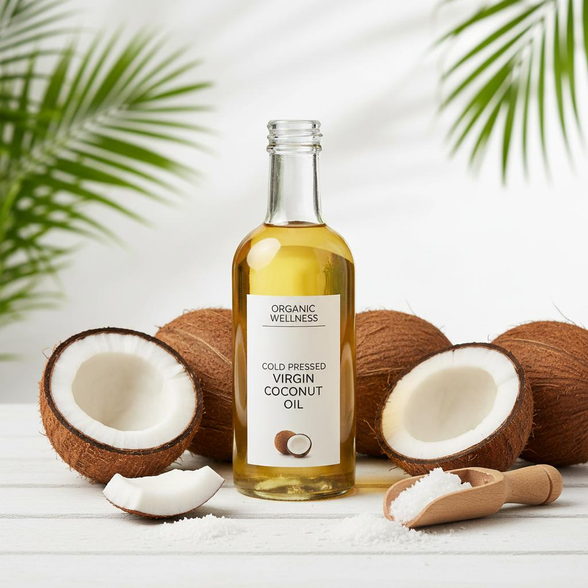
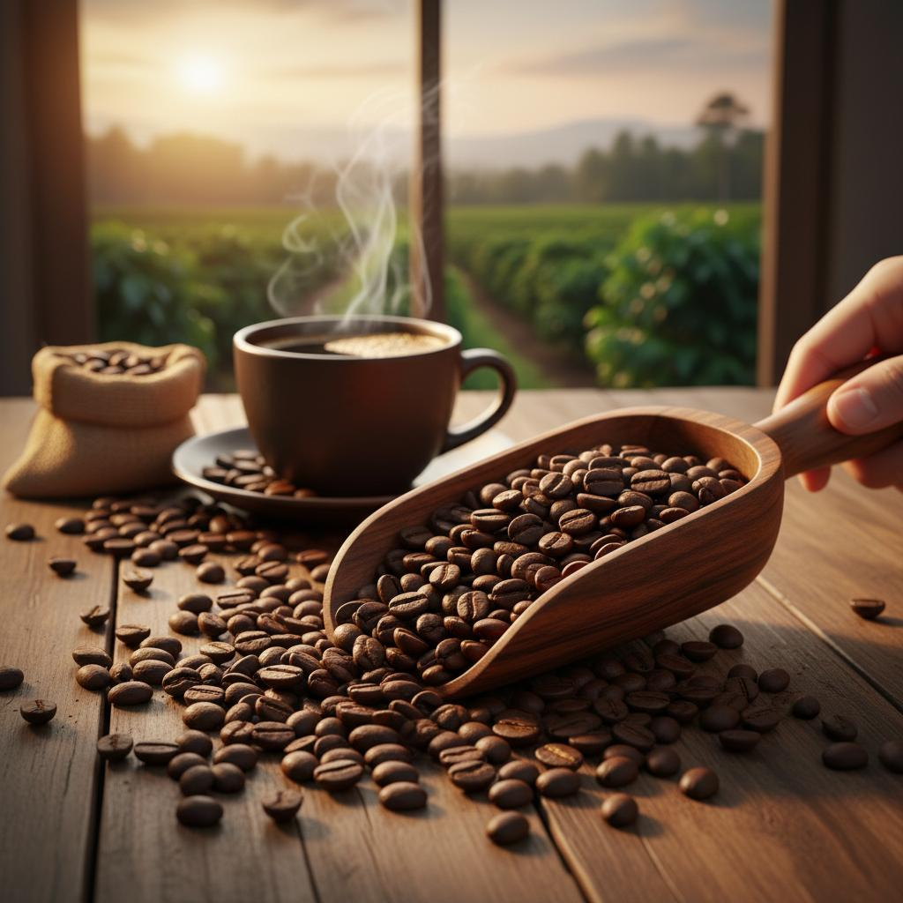

Website Pertanian
Demo website pertanian modern dengan informasi produk hasil tani, teknik bertani terbaru, dan marketplace pertanian.
Fitur Utama
Marketplace Hasil Tani
Jual beli hasil pertanian langsung dari petani dengan harga terbaik dan kualitas terjamin.
Panduan Bertani
Akses artikel dan video tutorial bertani dari para ahli pertanian terpercaya.
Info Cuaca & Musim
Pantau cuaca dan musim tanam terbaik untuk hasil panen yang optimal.
Komunitas Petani
Bergabung dengan komunitas petani untuk berbagi pengalaman dan ilmu bertani.
Produk Unggulan

Beras Organik
Beras premium berkualitas tinggi dari petani lokal, bebas pestisida kimia.

Sayuran Segar
Berbagai sayuran segar langsung dari kebun, dipanen setiap hari.

Buah-Buahan
Buah-buahan segar dan manis dari kebun terbaik di Indonesia.

Rempah-Rempah
Rempah asli Indonesia dengan kualitas ekspor untuk masakan lezat.

Minyak Kelapa
Minyak kelapa murni cold-pressed untuk kesehatan dan kecantikan.

Kopi Arabika
Kopi arabika premium dari dataran tinggi dengan cita rasa khas.
Tips Bertani
Pemilihan Benih Berkualitas
Pilihlah benih dari varietas unggul yang sesuai dengan kondisi iklim dan tanah di daerah Anda. Benih berkualitas akan menghasilkan tanaman yang sehat dan produktivitas tinggi.
Pengairan yang Tepat
Kelola pengairan dengan baik sesuai kebutuhan tanaman. Terlalu banyak atau terlalu sedikit air dapat mempengaruhi pertumbuhan dan hasil panen.
Pengendalian Hama Alami
Gunakan metode pengendalian hama yang ramah lingkungan seperti pestisida nabati dan predator alami untuk menjaga keseimbangan ekosistem.
Statistik Kami
Tertarik dengan Website Seperti Ini?
Saya bisa membuatkan website pertanian serupa untuk bisnis Anda dengan fitur lengkap dan desain profesional.
Hubungi Saya